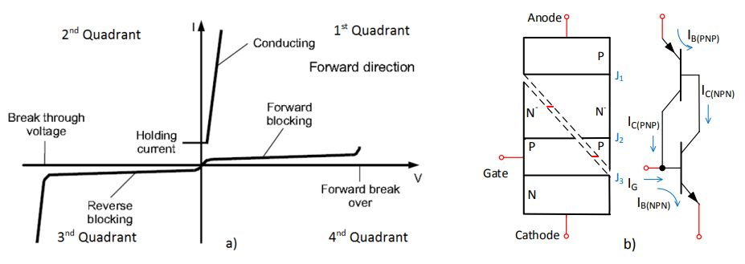
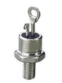

Ein Thyristor ist ein Festkörper-Halbleitergerät, das als Diode fungiert, d.h. Strom fließt in eine Richtung, von der Anode zur Kathode, sofern die Spannung zwischen Anode und Kathode positiv ist, aber nur wenn die Gate-Kathodenspannung einen bestimmten Wert überschritten hat.
Seine Kennlinie und Schichtstruktur sind in der folgenden Figur dargestellt.



Die obige Figur zeigt einen elektrischen Stromkreis, der zur Steuerung des von einem Glühbirnen emittierten Lichts mittels eines Thyristors verwendet werden kann.
Bei Schalter S1 die durch den Widerstand R gebildete Schaltung geschlossen ist,tund Kondensator C die VAC Signal an den Anschlüssen C,zeitverzögert. Wenn diese Spannung bei C dieLeitungswert der Diode D1 (ca. 0,6 V) plus die erforderliche Spannungdas Tor des SCR-Thyristors anregen(ein Wert kleiner als ")Vorwärts brechen über"), beginnt der Thyristor dann zu leiten. Dies ist in der Abbildung oben rechts dargestellt ("Wettbewerb").
Je länger die Verzögerung beim Anregen des Thyristor-Gatters, desto kürzer wird die Zeit, die es leiten wird, und damit diemittlerer Strom fließt durch ihn in einem Zykluswird niedriger sein. Das von der "Lampe"Lampe ist größer, je höher dieser mittlere Strom ist. Diese Verzögerung ist proportional zu den Werten von Rtund C, d.h. der höhere Rt ist, je mehr der Zeitpunkt des Eintritts in die Durchführung verzögert wird, und daher wird die Leitungszeit kürzer sein. Mit anderen Worten:höher Rt ⇒weniger Licht.
Dies ist das gleiche Prinzip, das imWeicher Starter, außer dass in jeder Phase des elektrischen Netzes zwei Thyristoren in "antiparallel"d.h. die Kathode der einen mit der Anode der anderen verbinden, so daß die Schaltung in beiden Halbkreisen arbeitet.